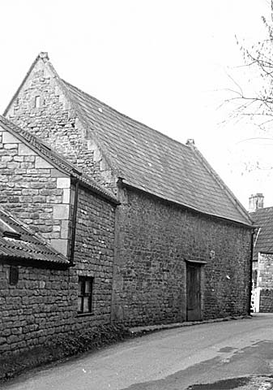
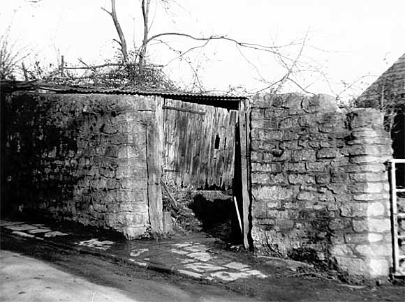
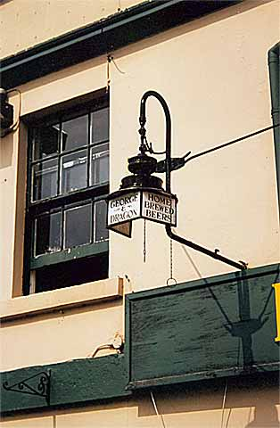
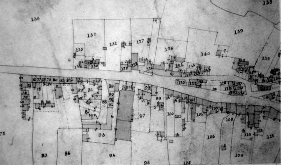
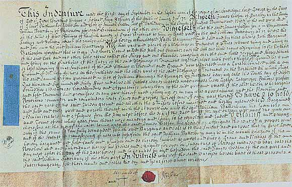
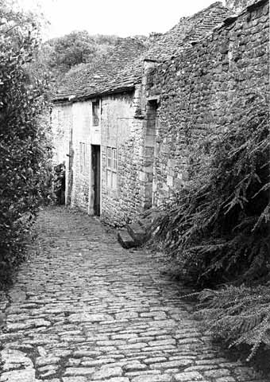

Agricultural, commercial and industrial
buildings of Batheaston
In relation to agricultural activities in Batheaston, past and present,
three barns have been surveyed; one of which is still in active farm use,
although soon to be converted into a dwelling, one is semi derelict although,
again, scheduled for conversion into a dwelling, and the last has already
been converted into a studio although its former agricultural usage is
still discernible. Four other barns are believed to be extant in Batheaston
but three of these have already been converted into residences. As befits
a pasture economy, one of the surveyed barns is of the combination type,
that is a ground floor area for keeping animals and an elevated platform
area for storage (3), one is a traditional threshing barn with large opposed
doors and other is a threshing barn converted to keep cattle. None of
the surveyed barns proved to be earlier than the late 18th Century.

3. A late 18th Century combination barn
The animal pound (4), one of two known to have been in Batheaston, has survived and has been recorded. On the basis of documentary evidence it is probably still upon its original medieval site although this could not be demonstrated by the physical survey as it has been constantly repaired, and even rebuilt, over the centuries. The whereabouts of the second pound is not yet known.

4. The pound in 1966 before its most recent rebuilding
In common with most villages, Batheaston has lost many of its High Street retail shops although the one existing shop surveyed turned out to be a series of converted cottages. Nevertheless, included in the survey are ex-shops, which have found alternative commercial or residential usage. This includes properties, which from an external examination appeared to be built solely as dwellings until an internal investigation revealed earlier commercial usage. A 19th Century brew house complete with hand operated brewing equipment was also surveyed; the public house concerned, the “George & Dragon” (5), being famed as the last in the Bath area to brew its own beer (Mike Bone, 2000, p.130).

5. The “George & Dragon”. A former gas lit lamp advertising
home brewed beer, an activity which, alas, ceased in the 1960’s.
The 1840 Tithe Map and Apportionment Schedule for Batheaston
indicated intense commercial activity in the central High Street area
with three malthouses, a brewery, three inns (“White Hart”,
“Lamb” and “Red Lion”), a smithy, stables, slaughterhouse
and butchery. The “White Hart” remains as such but the other
sites have been found new usages. The old butchery complex was surveyed
to reveal at its core a late 16th Century building which, when built,
must have been of considerable status and is one of the oldest extant
structures in Batheaston. By contrast, a terrace cottage dating only from
about 1878 was surveyed, the terrace being built on the site of a demolished
malthouse and possibly using the re-cycled stone (6).

6. Batheaston High Street from the 1840 Tithe Map showing the White Hart Inn (89), Lamb Inn (125), Red Lion Inn (122), brewery and malthouse (93) and another malthouse (128)
From at least the early 17th Century to about 1820, Batheaston was part of the village based woollen textile industry of South West England, which was organised on an outworking basis controlled by gentlemen clothiers (Randall, 1991, pp.15-18). Early property deeds have given a glimpse of the cottage weaving trade before the advent of powered machines and factories (7).

7. A property deed of 1721 naming Samuel Hodson (broadweaver of Batheaston),
his son James Hodson (clothworker of Dursley) and William Batterbury (husbandman).
A later deed of 1739 re-designated William Batterbury as broadweaver of
Batheaston and named his trustee William Webb (sergemaker of Batheaston)
Click Image for High Resolution Version
The first woollen textile factory was built about 1799 and the owner was
very quickly the recipient of a threatening letter from out of work hand
cloth workers (Randall, 1991, p.153).
But by 1823 the woollen industry in Batheaston was in terminal decline and the factory was converted to silk production until this came to an end in 1840 (Rogers, 1976, pp.167-168). By the time of the 1841 Census only two Batheaston residents professed to be still engaged in the trade - a cloth dresser and a silk worker both, appropriately enough, living at Factory Yard. But the industry has left its mark. In the opinion of Kenneth Rogers, expressed to the writer, Batheaston has probably the best preserved stove or wool drying house in the North-East Somerset and West Wiltshire area (8). Another structure believed to be a dye house, which went out of use by the early 18th Century, was found nearby, together with two small wagon bridges, a stables, a filled in mill pond, a working sluice and a wool cleansing area on the St. Catherine’s brook. There is no longer any trace of the factory itself. This structure was on six floors and 100 ft. long, together with another associated single storey structure of 180 ft. length (Rogers, 1976, p.168).

8. “Dyehouse Lane”, Batheaston, showing the stables and stove house